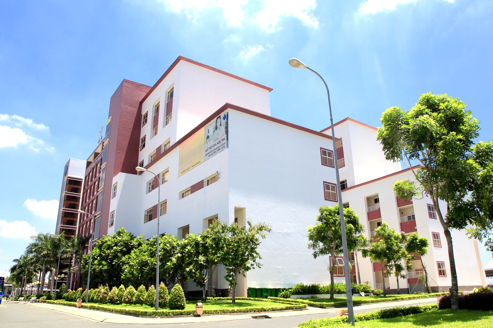
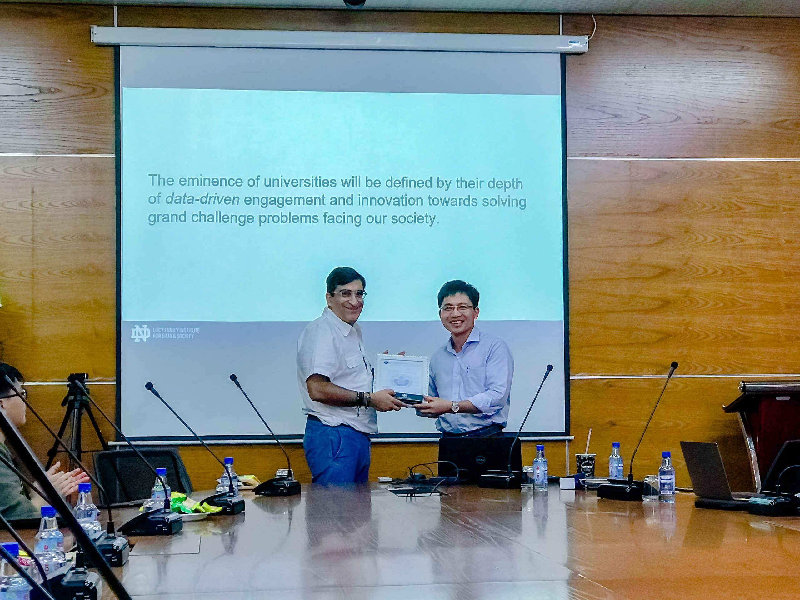

INTERNATIONAL UNIVERSITY - HCMC
School of Computer Science and Engineering

As a fourth-year student majoring in Computer Science at the School of Information Technology, International University (IU) - Vietnam National University, I am deeply passionate about the field of technology and its endless possibilities. Being part of the first and only public university in Vietnam to offer a fully English-taught program, my educational journey has been enriched with global perspectives, diverse cultural exchanges, and a rigorous academic curriculum.
Throughout my academic tenure, I have been exposed to cutting-edge technologies, industry-relevant projects, and hands-on experiences that have equipped me with the necessary skills and knowledge to thrive in today's fast-paced digital landscape. The faculty members at IU are not only experts in their respective fields but also mentors who have guided me in honing my critical thinking, problem-solving, and communication abilities.
Moreover, the multicultural environment at IU has provided me with invaluable opportunities to collaborate with peers from various backgrounds, fostering teamwork, cross-cultural understanding, and adaptability – essential qualities in the globalized world we live in today.
Moreover, the multicultural environment at IU has provided me with invaluable opportunities to collaborate with peers from various backgrounds, fostering teamwork, cross-cultural understanding, and adaptability – essential qualities in the globalized world we live in today.
